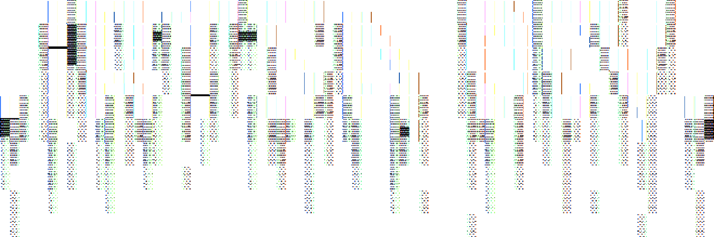

Hello! You may call me Irtsa.
I am a programmer who primarily writes in Python. While I do have skills in other languages such as Java, C++, C#, and more,
I prefer to stick with Python.
Why? No other reason other than it is the language I am most comfortable with and have been coding in since around 2014.
I did start mainly using block based programming before I went on to other languages and eventually landing on Python.
After a few years I picked up Java, C++, C#, and so on.
Most of my work up until recent has been more personal projects for myself and those close to me, I didn't really feel all to great with
making my work public. If you want to check out my works, you can vist my blog or go directly to my github.